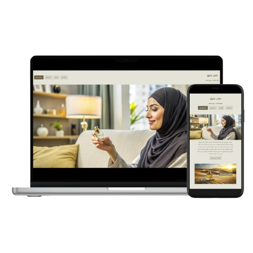
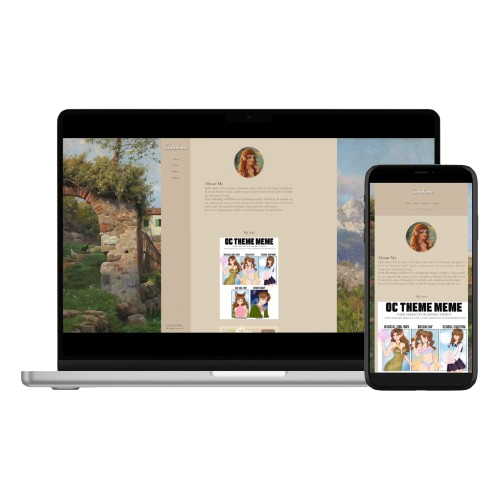
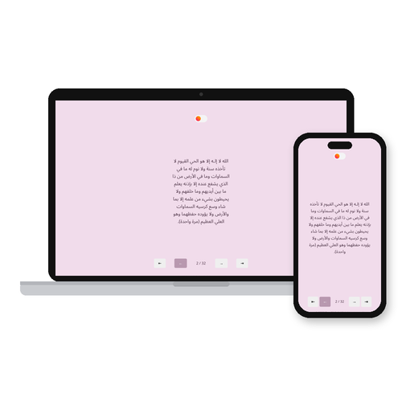
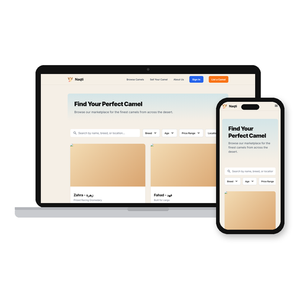
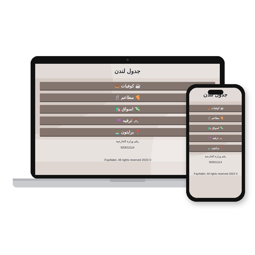

A professional portfolio website featuring an integrated online booking system for life coaching services. Designed with a focus on user experience, this project showcases the client expertise and allows his patients to schedule sessions seamlessly.

Ateeq Store
An online store for a Saudi brand that specializes in selling premium perfumes. This project combines a modern design with intuitive navigation, making it easy for customers to browse and purchase their favorite fragrances.

Deema's Art Portfolio
A creative showcase portfolio for Sirendema, highlighting her artistic talent and versatility. This project emphasizes visual storytelling and provides an immersive experience for art enthusiasts.

Athkar
A calm Arabic web app for the morning and evening adhkar. It shows one dhikr at a time with simple controls and a sun and moon switch between morning and evening, and it is designed for phones first.

Naqti
A camel marketplace concept with search, filters and listing cards, designed in HTML and Tailwind CSS with a warm desert palette.
Twitch Chat Viewer
A customizable viewer for any streamer's Twitch chat, with light, dark and cozy themes and a custom background color. Preferences are saved in the browser.

London Trip Planner
An Arabic travel planner for London and Brighton with cafes, restaurants, shopping and things to do. Every place links to Instagram and Google Maps, and the home page shows the weather.
Edinburgh Travel Guide
A bilingual guide to Edinburgh's cafes, restaurants, shopping and nature spots, with a fixed menu to jump between sections and a map link for every place.